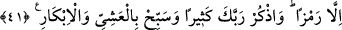

çocuk yaratır ki bunlar insanları hayrette bırakır.
41. Zekeriya: Rabbim! (Oğlum olacağına dâir) bana bir alâmet göster, dedi. Allah
buyurdu ki: Senin için alâmet, insanlara, üç gün, işaretten başka söz
söylememendir. Ayrıca Rabbini çok an, sabah akşam tesbih et.
“Zekeriya dedi ki: Rabbim bana bu husûsta bir alâmet ver?” Yani istediğimin
gerçekleşeceğine, hâmileliğin vukû bulacağına dâir bana bir işaret, bir nişan ver.
Zekeriya bunu özellikle istedi. Çünkü hâmilelik gizli bir iştir; başlangıçta kimse
anlayamaz. Bu sebeple Allah’ın kendisine bunu bildirmesini istedi ki, nîmet tahakkuk
ettiği anda şükretsin ve mu’tâd olduğu şekilde belli oluncaya kadar şükrünü
geciktirmesin.
Allah buyurdu ki: “Senin alâmetin, sade bir işaretten başka insanlara üç gün söz
söylememendir.” Çocuğun olacağına dâir alâmet, üç gün, üç gece insanlarla konuşmaya
güç yetirememendir. “Üç gün” ifadesi, gecelerine de şâmildir. Çünkü gündüzün veya
gecenin tek olarak zikredilmesi, diğerinin de ifade edilmesi demektir. Biri diğerine
girmektedir. Dilde ve örfte böyledir. Alâmetin, üç gün kimseyle konuşmamak şeklinde
olması, bu müddetin Allah’ı zikre ve O’na şükre tahsîs edilmesi ve nîmetin hakkının
yerine getirilmesi içindir. “İşaretten başka” buyurularak remzin istisnâ edilmesi, elle
veya başla işaret edilebileceğini gösterir. “Remz” de kelâm; yani söz sayılmıştır. Çünkü
“remz” de sözün göreceği vazifeyi görebilir; sözden anlaşılan şey ondan da
anlaşılabilir. Bu sebeple ondan muttasıl istisnâ câiz olmuştur. Sonra Cenâb-ı Hak,
zikrullah’tan men’ olunmadığı için kendisini zikretmesini emretmiştir: “Rabbini çok
zikret ve akşam-sabah O’nu tesbih et.” Bu üç günlük süre içerisinde Allah’ın fazlı ve
nîmetinin hâsıl olması için Rabbini çokça zikret. Aşiyy, yani zevalden güneş batıncaya
kadar; İbkâr da fecrin doğuşundan kuşluk vaktine kadar olan zaman için kullanılmıştır.
Fahreddin Râzî demiştir ki: “Rabbini çok zikret” kavl-i şerîfi hakkında iki görüş
vardır:
Birincisi: Cenâb-ı Hak ona lisânını dünya işlerinden muhâfaza etmesini, ancak remz
ile konuşmasını emretmiştir. Ancak zikr ve tesbîhe gelince, onun lisanı bu işe oldukça
elverişlidir. Bu da büyük mûcizelerdendir.
İkincisi: Çok zikirden murad kalp ile zikirdir. Çünkü mârifetullah denizlerine
dalanların başlangıçtaki halleri bir müddet lisanla zikre devam etmektir. Kalp, zikrullah
nûruyla aydınlandıktan sonra ise lisanen sükût edilip kalp ile zikre devam edilir. Bu
sebeple demişlerdir ki: “Allah’ı bilenin dili durur. Zekeriya (a.s.) da diliyle sükût
etmekle, kalbiyle daima zikir hâlinde bulunmakla ve Allah’ı bilip unutmamakla